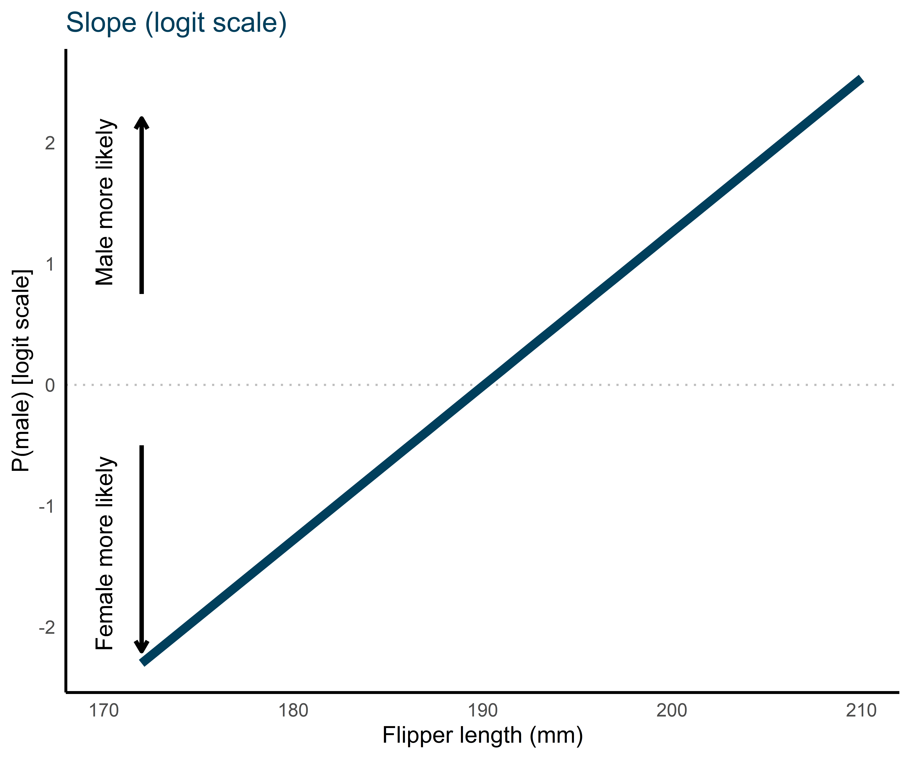
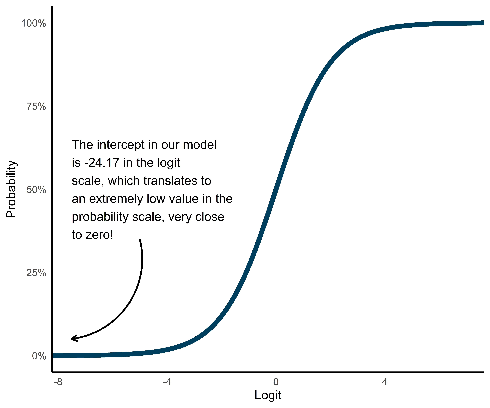
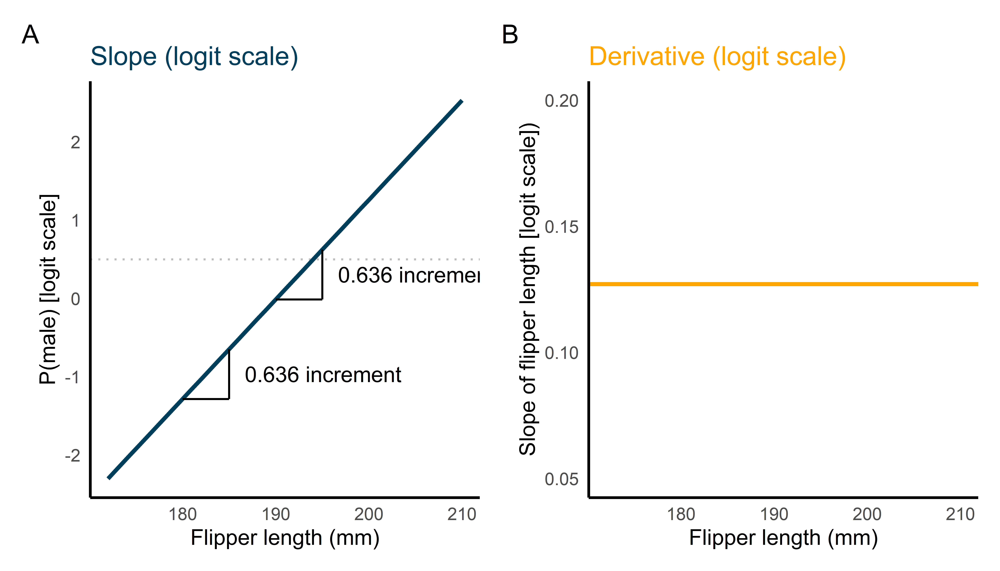
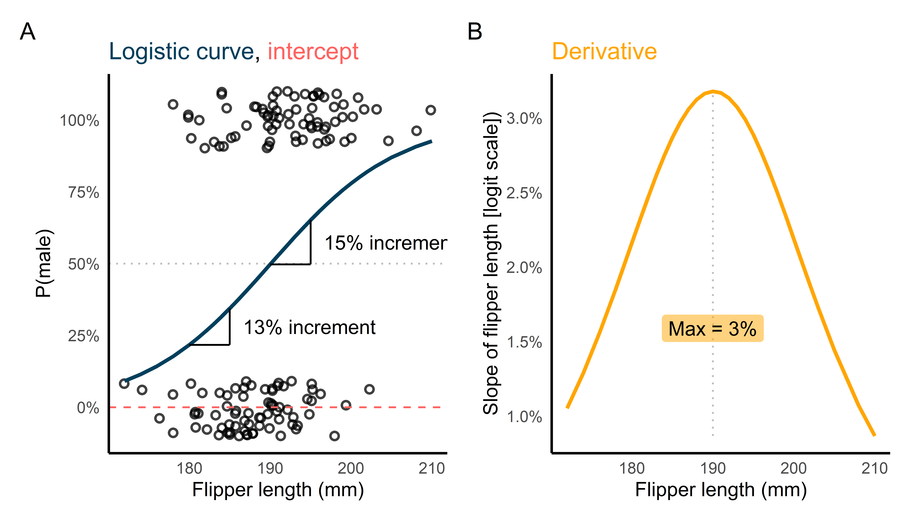

Logistic regression models provide information way beyond a p-value. Using the {palmerpenguins} dataset, I review the relationship between the logistic and the logit functions, and how it relates to the outputs of a binomial regression model with an emphasis on marginal effects.
The logistic function is a mathematical function that defines how the values of an input variable \(x\) that spans the range of real values (\(x \in (-\infty, +\infty)\)) are associated to an output variable \(y\) that spans an interval of real values contained between the \([0, 1]\) interval or narrower. This function is monotonic: for all values of \(x\), \(y\) increases for negative values of \(x\) and increases for positive values of \(x\), or the other way around. This functions takes the general form:
\(L\) is the upper limit of \(y\), which is commonly assumed to be 1, where \(L \in (0, +\infty)\))
\(\beta\) is a coefficient that indicates the steepness of the logistic curve, or how fast the curve grows, where \(\beta \in (-\infty, +\infty)\). Positive values of this coefficient lead to the logistic curve growing as \(x\) gets more positive, to the logistic curve decays when \(x\) gets more negative.
\(x_0\) is the mid-point of the logistic curve, indicating the value of \(x\) where the maximum of \(\beta\) is found, that is, when the logistic curve is steepest
I first learnt about the logistic function and its parameters in this blog post by TJ Mahr, in which he describes the different parameters of the function, and how they relate to its behaviour. Let’s take a look at how the logistic curve looks like for different values of these parameters. We can implement the logistic curve like this:
Now we generate a logistic curve by applying logistic() to a vector of values x. We will set the steepness (\(\beta\), slope), mid-point (\(x_0\), mid), and upper limit (\(L\), upper) at different values for illustration.
You might seem the logistic function in different forms. This might be because it can parametrised in slightly different ways (as we’ll see later), or because someone decided to pick different symbols for the same parameters. parametrised in many ways. Sometimes, you might even find a formula for the logistic form that includes less parameters. This is because it is common to assume that some of the parameters we have seen are constant. For instance, whenever we assume that \(y\) ranges from 0 to 1 (e.g., we are modelling proportions or probabilities), \(L\), or the upper limit, can be assumed to be 1 (see ?@eq-up and note how we have replaced \(L\) with 1).
It is still not clear how Equation 2 relates to a regression model, right? The coefficients returned by our regression model—the intercept and the slope of flipper_length_mm—do not map perfectly into the coefficients of the logistic function in Equation 2. These regression coefficients are meant to be in the exponential of \(e\), which is \(-\beta \ (x-x_0)\), but we must first make a simple change:
Here, \(\beta_0 = -kx_0\) and \(\beta_1 = k\). This is how the intercept and the slope of the predictors map into the logistic regression function! The intercept indicates
This is called the one-parameter regression logistic function because, effectively, we only one parameter is left to be estimated: the steepness of the curve, or \(\beta\). The one-parameter logistic regression function is the one we usually encounter in logistic regression. The more general cases of the two-parameter (Equation 3) and three-parameter (Equation 2) logistic regression functions are more flexible and are used when one is particularly interested in estimating them explicitly in a statistical model. This Wikipedia article suggests some historical uses of these functions. Perhaps importantly for Psychology and Cognitive Science is the use of the two- and three-parameters logistic functions in Item Response Theory (IRT).
The logit function
The logit scale, or the log odds scale, was created by Joseph Berkson in 1944 as a solution to apply linear regression to a variable whose values ranged from 0 to 1 (e.g., proportions). The name logit scale was derived from logistic unit. The rationale behind this function was to transform the original variable contained in the \([0, 1]\) interval, to a set of values ranging from \(-\infty\) to \(\infty\). This way, it was possible to use linear regression to the transformed variable, and therefore hold its assumptions. You will frequently see the logit function expressed as in Equation 4 next to the clarification that \(p\) is a value comprehended between \([0, 1]\), and that this function is the the inverse of the logistic function.
It can be a bit unclear how we ended up with this formula. Let’s try to reconstruct the process1. The logistic function can be expressed in a slightly different way, from which the logit function, its inverse function, is derived. This is how this alternative parametrisation can be found:
1 For a more detailed description of the derivation of the logit function from the logistic function—and also for a exhaustive explanation of logistic regression, see this tutorial by Hause Lin.
The inverse of \(e^{\beta_0 + \beta_1x}\) is the natural logarithm of \(\beta_0 + \beta_1x\), that is, \(\text{ln}(\beta_0 + \beta_1x)\). The inverse of the logistic function as expressed in Equation 5, and therefore the logit function, is:
There are more transformations available to make variables in the \([0, 1]\) interval suitable for linear regression, like probit. We won’t get into them, since they fall out of the scope of this blog post. Let’s see how this takes the form of logistic regression in real data.
Following Equation 7, we can express this regression model in the probability scale by using the logistic function and replacing the exponential bit in the denominator with our regression model:
We can implement this model using the base R function glm(..., family = binomial("logit")) in which the family argument tells the function what type of generalised regression family we are interesting in using, and where binomial("logit") indicates that we want the logistic function to be used with the logit link transformation (as opposed to probit).
fit<-glm(sex~flipper_length_mm, data =my_data, family =binomial("logit"))
Interpreting the coefficients
We have first fitted a binomial logit regression model in which we estimate the probability of a given penguin being female or male, adjusting for their flipper length in millimetres. This is a generalised linear model (GLM): after we transform the response variable (sex, coded as 0s and 1s) to the logit scale, the resulting response variable is modelled as a conventional linear model. This means that we can interpret the coefficients of this model the same way we would in a linear model. These are our coefficients:
We can generate and visualise the predictions of our model using the predict function. By setting type = "link", we are asking the function to return the predictions in the function-link scale, which in our case is the logit function.
# model predictions (on the probability scale by default)my_data<-mutate(my_data, sex_pred =predict(fit, type ="link"))
Figure 3 shows the predictions of the model in the logit scale. The intercept informs us of the probability of an average penguin being male (sex = 1) in the logit scale when all predictors are set at zero: in our case, when flipper_lenght_mm = 0. The value of the intercept -24.17 is somewhat difficult to interpret for two reasons.
First, it’s in the logit scale, which is not interpretable by itself, as opposed to the probability scale. For instance, it is easy to understand what a 50% probability of a penguin being male means: if we pick one penguin at random from our population of penguins of interest, the chances of it being male is roughly the same as flipping a coin and getting tails. It is not possible to determine what a 0 logit (equivalent to 50% in the probability scale) of a penguin being male means if not by transforming it to the probability scale. For now, let’s just agree that negative values on the logit scale indicate that the chance of a penguin being male is lower than it being female, that positive values on the logit scale mean that the chance of a penguin being male is higher than it being female, and than a logit of 0 indicates that a penguin is equally likely to be male or female. With this information, we can conclude that a penguin with 0mm flipper length is extremely likely to be female (-24.17 is a very large negative number in the logit scale).
Code
# predictions of model with unstandardised ageggplot(my_data, aes(flipper_length_mm, sex_pred))+geom_hline(yintercept =0.5, colour ="grey", linetype ="dotted")+geom_line(aes(x =flipper_length_mm, y =sex_pred), size =1, colour =clrs[1])+annotate(geom ="text", label ="Male more likely", x =170, y =2.2, angle =90, hjust =1)+annotate(geom ="segment", y =0.75, yend =2.2, x =171, xend =171, size =1, arrow =arrow(length =unit(0.2, "cm")))+annotate(geom ="text", label ="Female more likely", x =170, y =-2.2, angle =90, hjust =0)+annotate(geom ="segment", y =-0.5, yend =-2.2, x =171, xend =171, size =1, arrow =arrow(length =unit(0.2, "cm")))+labs(x ="Flipper length (mm)", y ="P(male) [logit scale]", title ="<span style = 'color:#003f5c;'>Slope (logit scale)</span>")+guides(linetype ="none")+theme(legend.title =element_blank(), plot.title =element_markdown())

Figure 3: ?(caption)
A second reason why interpreting the intercept of this model is troublesome stems precisely in that this value corresponds to the likelihood of a penguin being male when flipper length is 0mm. This value is uninterpretable because a flipper length of 0mm would mean that the penguin has no flippers. We are not really interested in finding out the probability of a penguin with no flippers being male. I’m not expert, but I assume that such a penguin would likely not be part of our population of interest here. Rather, we might be interested in getting the probability of being male of a penguin with some interesting flipper length, such as the average flipper length (190.1 in our sample). We will address how to do this later.
Interpreting the slope of flipper_length_mm is also daunting. On the logit scale, its interpretation is fairly straightforward: the value of this coefficient (0.13) indicates how much the chance of a penguin being male increases for every unit increase in flipper length in the logit scale. Since flipper_lenght_mm is expressed in millimetres, we can conclude that for every millimetre increment in flipper length, the chance of the measure penguin being male increases in (0.13) logits. Again, we are not sure how to interpret this quantity, since the logit scale is not interpretable by itself. We need to transform the coefficient of flipper_length_mm to the probability scale to get a grasp on the actual meaning in a theoretically meaningful way.
The probability scale
We previously tried to interpret the coefficients of a binomial logit regression model, and encountered some difficulties. One of them related to the fact that coefficients are expressed in the logit scale. We can solve this by transforming these values—in our case the intercept and the coefficient of flipper_length_mm—to the probability scale. This way, the intercept will indicate the probability of a penguin being male when their flipper is 0mm long2. The coefficient of flipper_length_mm will tell us how much such probability increases for every millimetre increase in flipper length.
2 As we have already discussed, such penguin is unlikely to exist, and therefore this quantity will be uninteresting, but we will address this issue later.
Transforming values from the logit to the probability scale, however, is not very straightforward. This is because the relationship between probabilities and logits is non-linear. If you remember, we had transformed probabilities to logits for this reason precisely! In order to fit a linear model in a sensible way, we to transform our response variable (probabilities) to a scale with the right properties. One of such transformations was the logit function, which we employed. Now we have to deal with its consequences.
To transform logits to probabilities we can use the inverse logit function (see Equation 10).
This quantity tells us that the probability of a penguin with flipper length equal 0mm (remember that the intercept tells us the value of the response variable when predictors are set at 0). This value, as we suspected is very close to zero: percent(plogis(coef(fit)["(Intercept)"])). Obviously, if male penguins tend to have longer flippers, the model will predict that penguins with zero-length flippers as extremely likely to be female! (see ?@fig-logit-prob-interecept). But aside from this issue that we’ll deal with later, transforming the intercept from a logit model to the probability scale seems fairly simple.
Code
prob<-seq(0, 1, 0.001)logit_fun<-function(x)log(x/(1-x))d<-tibble(prob, logit =logit_fun(prob))txt<-str_wrap(paste0("The intercept in our model is ", round(coef(fit)["(Intercept)"], 2)," in the logit scale, which translates to an extremely ","low value in the probability scale, very close to zero!"), width =20)ggplot(d, aes(logit, prob))+annotate(geom ="segment", x =-6, xend =-7.5, y =0.2, yend =0.2, size =0.75, arrow =arrow(length =unit(0.2, "cm")))+annotate(geom ="text", label =txt, x =-7.5, y =0.5, hjust =-0.1)+geom_line(colour =clrs[1], size =1)+labs(x ="Logit", y ="Probability")+scale_y_continuous(labels =percent)

Figure 4: ?(caption)
Doing the same with the coefficient of its predictors is a different story. This is because the intercept of the model maps into a single point in the logit scale, and therefore it does in the probability scale. There is a one-to-one correspondence between each value of the logit and the probability scales. But a regression coefficient does not refer to a value in either scale, but to a difference in values. Specifically, a regression coefficient tells us the estimated increase in the response variable for every unit increment in the predictor—while any other predictor is set at zero. This is true for any linear regression model, including ours. As long as we remain in the logit scale, the coefficient of the flipper_length_mm predictor will inform us of the increase in logits of being male for every millimetre increment in flipper length. But as soon as we move to the probability scale, this stops being true. This is because of the non-linear relationship between logits and probabilities: a difference of one logit of being male is not the same for the entire range of flipper lengths. Take a look at Figure 5.
Code
prob<-seq(0, 1, 0.001)logit_fun<-function(x)log(x/(1-x))d<-tibble(prob, logit =logit_fun(prob))# model predictions (on the probability scale by default)my_data<-mutate(my_data, sex_pred =fitted(fit), sex_pred_logit =predict(fit, type ="link"))point_preds<-data.frame(flipper_length_mm =c(180, 185, 190, 195))%>%mutate(sex_pred =plogis(predict(fit, .)))# predictions of model with unstandardised ageggplot(my_data, aes(flipper_length_mm, sex_pred))+# plot observationsgeom_point(aes(y =as.numeric(sex)-1), shape =1, size =1.5, stroke =1, position =position_jitter(height =0.1), alpha =0.75)+geom_hline(yintercept =0.5, colour ="grey", linetype ="dotted")+geom_line(aes(x =flipper_length_mm, y =sex_pred), size =1, colour =clrs[1])+# plot intercept (y when x = 0)geom_hline(yintercept =plogis(coef(fit)["(Intercept)"]), linetype ="dashed", colour =clrs[4])+geom_segment(aes(x =point_preds[1,1], xend =point_preds[2,1], y =point_preds[1,2], yend =point_preds[1,2]))+geom_segment(aes(x =point_preds[2,1], xend =point_preds[2,1], y =point_preds[1,2], yend =point_preds[2,2]))+annotate(geom ="text", label =paste0(percent(point_preds[2,2]-point_preds[1,2]), " increment"), x =point_preds[2,1], y =mean(c(point_preds[1,2], point_preds[2,2])), hjust =-0.1)+geom_segment(aes(x =point_preds[3,1], xend =point_preds[4,1], y =point_preds[3,2], yend =point_preds[3,2]))+geom_segment(aes(x =point_preds[4,1], xend =point_preds[4,1], y =point_preds[3,2], yend =point_preds[4,2]))+annotate(geom ="text", label =paste0(percent(point_preds[4,2]-point_preds[3,2]), " increment"), x =point_preds[4,1], y =mean(c(point_preds[4,2], point_preds[3,2])), hjust =-0.1)+labs(x ="Flipper length (mm)", y ="P(male)", title ="<span style = 'color:#003f5c;'>Logistic curve</span>, <span style = 'color:#ff6361;'>intercept</span>")+guides(linetype ="none")+scale_y_continuous(labels =percent, breaks =seq(0, 1, 0.25))+theme(legend.title =element_blank(), plot.title =element_markdown())
Figure 5: ?(caption)
As you can see, a difference in the logit scale does not scale linearly to the probability scale. The difference in probability of being male between a penguin with 185mm-long flipper and a penguin with 190mm-long flipper is 0, whereas the difference in probability of being male between a penguin with 190 mm-long flipper and a penguin with 195 mm-long flipper is 0. In both cases, the difference in flipper length is the same (5 mm), but the estimated difference in the probability of being male is different!
This non-linearity in the relationship between logits and probabilities should be considered when interpreting the coefficients of a logistic regression model and, more generally, whenever the response variable has been transformed before entering the model. One strategy to ease the regression coefficients is to calculate the marginal effects of the model for specific values of the predictor.
Marginal effects
Defining marginal effect is tricky. As it happens with many concepts and labels in statistics, the same label may be used to refer to different concepts, and several labels may be used interchangeably to refer to the same concept. Each subfield seems of science seems to use a somewhat intrinsic lexicon, which sometimes leads to some confusion. I will adopt the terminology in the documentation of the marginaleffects R package (arel-bundock2023marginaleffects?), in which a marginal effect is defined in the context of regression as:
[…] the association between a change in a regressor \(x\) and a change in the response \(y\). Put differently, the marginal effect is the slope of the prediction function, measured at a specific value of the regressor \(x\).
According to this definition, calculating the marginal effect of our predictor of interest flipper_length_mm means extracting its slope for a specific value of the predictor. For linear regression models, this is trivial: since the relationship between the predictor and the response variable is assumed linear, the slope is considered constant across the whole range of the values of the predictor, and therefore the its marginal effect is identical for all of them. We can prove this by taking a look at the estimates of our model in the logit scale, which is linear. Let’s say that we are interested in finding out the slope of flipper_length_mm for its average, 190.1027397. A slope is just a difference. And a difference is a derivative. And the linear regression function, \(y = \beta_0 + \beta_1 x\), is a function that can be derived (see Equation 11).
The derivative of the linear regression equation is a constant! This constant corresponds to the regression coefficient of flipper_length_mm. This means that the difference in probability of being a male penguin is going to be same for two penguins whose flippers are 180 mm and 185 mm, respectively, and for two penguins whose flippers are 190 and 195 mm, respectively. Take a look at Figure 6. The difference in chances of being male between each pair of penguins, in the logit scale, is the same: 0.64, which corresponds to five times the flipper_length_mm regression coefficient because in both cases the difference in flipper length is not 1 mm but 5 mm (\(5 \times 0.1271 = 0.635\)). but, again, any value in the logit scale is difficult to interpret by itself, so we are interested in translating this to the scale of probabilities.
Code
# predictions of model with unstandardised agepoint_preds<-data.frame(flipper_length_mm =c(180, 185, 190, 195))%>%mutate(sex_pred =predict(fit, ., type ="link"))ggplot(my_data, aes(flipper_length_mm, sex_pred_logit))+geom_hline(yintercept =0.5, colour ="grey", linetype ="dotted")+geom_line(aes(x =flipper_length_mm, y =sex_pred_logit), size =1, colour =clrs[1])+geom_segment(aes(x =point_preds[1,1], xend =point_preds[2,1], y =point_preds[1,2], yend =point_preds[1,2]))+geom_segment(aes(x =point_preds[2,1], xend =point_preds[2,1], y =point_preds[1,2], yend =point_preds[2,2]))+annotate(geom ="text", label =paste0(round(point_preds[2,2]-point_preds[1,2], 3), " increment"), x =point_preds[2,1], y =mean(c(point_preds[1,2], point_preds[2,2])), hjust =-0.1)+geom_segment(aes(x =point_preds[3,1], xend =point_preds[4,1], y =point_preds[3,2], yend =point_preds[3,2]))+geom_segment(aes(x =point_preds[4,1], xend =point_preds[4,1], y =point_preds[3,2], yend =point_preds[4,2]))+annotate(geom ="text", label =paste0(round(point_preds[4,2]-point_preds[3,2], 3), " increment"), x =point_preds[4,1], y =mean(c(point_preds[4,2], point_preds[3,2])), hjust =-0.1)+labs(x ="Flipper length (mm)", y ="P(male) [logit scale]", title ="<span style = 'color:#003f5c;'>Slope (logit scale)</span>")+guides(linetype ="none")+ggplot(my_data, aes(flipper_length_mm, sex_pred))+geom_point(colour =NA)+geom_hline(yintercept =coef(fit)["flipper_length_mm"], size =1, colour ="#ffa600")+labs(x ="Flipper length (mm)", y ="Slope of flipper length [logit scale])", title ="<span style = 'color:#ffa600;'>Derivative (logit scale)</span>")+scale_y_continuous(limits =c(0.05, 0.2))+plot_layout()&plot_annotation(tag_levels ="A")&theme(legend.title =element_blank(), plot.title =element_markdown())

Figure 6: ?(caption)
We have seen that regression coefficients do not behave identically for different values of their predictors when transformed to probabilities. The exact point of flipper_length_mm at which we calculate its marginal effect matters. This is because the derivative of the logistic function, which describes the behaviour of the probability scale we just moved to, is no longer a constant. See Equation 12.
The derivative of the logistic function still considers the value of the predictor (\(\text{Flipper length}\)), which means that the value of the derivative changes depending on such value. Let’s try to visualise this. First, we are going to implement the derivative of the logistic function as an R function that computes it for the fit model:
Figure 7 shows how the derivative changes for each value of the predictor. As you can see, the difference in probability of being male is largest at around 190 mm, while such difference decreases as flipper_length_mm shifts away from 190 mm.
Code
# model predictions (on the probability scale by default)my_data<-mutate(my_data, derivative =logistic_derivative(fit, "flipper_length_mm", flipper_length_mm))point_preds<-data.frame(flipper_length_mm =c(180, 185, 190, 195))%>%mutate(sex_pred =plogis(predict(fit, .)), derivate =logistic_derivative(fit, "flipper_length_mm", flipper_length_mm))# predictions of model with unstandardised ageggplot(my_data, aes(flipper_length_mm, sex_pred))+# plot observationsgeom_point(aes(y =as.numeric(sex)-1), shape =1, size =1.5, stroke =1, position =position_jitter(height =0.1), alpha =0.75)+geom_hline(yintercept =0.5, colour ="grey", linetype ="dotted")+geom_line(aes(x =flipper_length_mm, y =sex_pred), size =1, colour =clrs[1])+# plot intercept (y when x = 0)geom_hline(yintercept =plogis(coef(fit)["(Intercept)"]), linetype ="dashed", colour =clrs[4])+geom_segment(aes(x =point_preds[1,1], xend =point_preds[2,1], y =point_preds[1,2], yend =point_preds[1,2]))+geom_segment(aes(x =point_preds[2,1], xend =point_preds[2,1], y =point_preds[1,2], yend =point_preds[2,2]))+annotate(geom ="text", label =paste0(percent(point_preds[2,2]-point_preds[1,2]), " increment"), x =point_preds[2,1], y =mean(c(point_preds[1,2], point_preds[2,2])), hjust =-0.1)+geom_segment(aes(x =point_preds[3,1], xend =point_preds[4,1], y =point_preds[3,2], yend =point_preds[3,2]))+geom_segment(aes(x =point_preds[4,1], xend =point_preds[4,1], y =point_preds[3,2], yend =point_preds[4,2]))+annotate(geom ="text", label =paste0(percent(point_preds[4,2]-point_preds[3,2]), " increment"), x =point_preds[4,1], y =mean(c(point_preds[4,2], point_preds[3,2])), hjust =-0.1)+labs(x ="Flipper length (mm)", y ="P(male)", title ="<span style = 'color:#003f5c;'>Logistic curve</span>, <span style = 'color:#ff6361;'>intercept</span>")+guides(linetype ="none")+scale_y_continuous(labels =percent, breaks =seq(0, 1, 0.25))+ggplot(my_data, aes(flipper_length_mm, logistic_derivative(fit, "flipper_length_mm", value =flipper_length_mm)))+geom_point(colour =NA)+geom_line(size =1, colour ="#ffa600")+geom_segment(aes(x =flipper_length_mm[which.max(derivative)], xend =flipper_length_mm[which.max(derivative)], y =min(derivative), yend =max(derivative)), colour ="grey", linetype ="dotted")+annotate(geom ="label", label =paste0("Max = ", percent(max(my_data$derivative))), fill ="#ffa600", alpha =0.5, colour ="black", label.size =0, x =my_data$flipper_length_mm[which.max(my_data$derivative)], y =max(my_data$derivative)*0.5)+labs(x ="Flipper length (mm)", y ="Slope of flipper length [logit scale])", title ="<span style = 'color:#ffa600;'>Derivative</span>")+scale_y_continuous(labels =percent)+plot_layout()&plot_annotation(tag_levels ="A")&theme(legend.title =element_blank(), plot.title =element_markdown())

Figure 7: ?(caption)
The maximum change in male probability is 3%, which occurs at around 190 mm flipper length. There is a smarter way of calculating the maximum slope of flipper_length_mm. This value will always occur at the mid-point of the logistic curve, and it turns out that to find the derivative of the logistic function at the mid-point (i.e., for \(x = x_0\), go back to ?@eq-logistic for a reminder), we only need to find \(\beta /4\), where \(\beta\) is the regression coefficient of our predictor of interest! This is called the divide-by-four-rule, and is a simple trick to report the coefficients of a logistic regression model in the scale of probabilities, and for meaningful values of the predictors (the value at which the slope is maximum). This way, we could just divide the regression coefficient of flipper_length_mm by four to get the maximum probability difference of being male between two penguins with flipper lengths \(x\) and \(x + 1\).
The divide-by-four rule
We have seen that dividing the coefficients of a logistic regression model (in the logit scale) gets us the maximum slope of the predictor in the probability scape. We mentioned that this has to do with the derivative of the logistic function at the mid-point. But since we dropped that term some equations ago after setting it at zero, it is no longer clear how one would derive the logistic function in such way that the divide-by-four-rule holds. Let’s go back to Equation 2, when the mid-point still appeared in our equation. We derive this formula:
Take a look at the previously cited blog post by TJ Mahr for a derivation that also includes the asymptote term in the logistic function.
Let’s put the divide-by-four rule. The output of the logistic_derivative() that we defined before should, when solved for the mid-point of the logistic curve, return an equivalent value to \(\beta_1 / 4\), where \(\beta_1 = 0.1271495\), and therefore return something close to 0.0317874. We don’t know what value of flipper_length_mm corresponds to the mid-point. In Figure 7 A, we calculated it my finding the value of flipper_length_mm for which logistic_derivative() returned the maximum value:
From our data, we find that the maximum slope of flipper_length_mm occurs at 190. But finding the mid-point this way requires us to have already calculated the derivative of the logistic function. There is an alternative way to compute this mid-point from the estimated coefficients of the regression model. An additional benefit of computing the mid-point this way, is that we are doing so by relying on model-projections, and therefore in a way that does not entirely rely on the range of values of the predictor for which we have computed the derivative of the logistic function. This method consists in ?@eq-midpoint-coefs.
\[
x_0 = -\beta_0 / \beta_1
\]
Where \(\beta\) is the intercept of the regression model, and \(\beta_1\) is the regression coefficient of the predictor we are calculating the mid-point for. We can implement this formula in R as:
# get point in x at the inflection point (where y = 0.5)get_mid<-function(x){coefs<-coef(x)[-1]mid<-coef(x)[1]/-coefsreturn(mid)}get_mid(fit)
(Intercept)
190.0882
Using this function, we find that the mid-point is located at flipper length 190.0882 mm, pretty close to what we had estimated from our data. This value can sometimes be extremely interesting! A personal experience: in my PhD, I investigated how the age at which children learn particular words is affected by participant-level and word-level characteristics. I used logistic regression to model the probability of a given child having learnt a word, adjusting for my predictors of interest, the most important of them being the age of the child. Older children are more likely to have learnt a given word than younger children. My model returned, among others, a coefficient for age in the logit scale, but I wasn’t specially interested in it, even after having transformed it to the probability scale. I was, however, more interested in finding the value of age at which most children were learning each word, which corresponded to the mid-point of the logistic curve for the age predictor!
Now that we have calculated the mid-point of our logistic function, we can finally compare the divide-by-four rule against the actual value of the derivative of the logistic function. If we solve Equation 12 for \(x_0 = 190.0882\) using logistic_derivative(fit, "flipper_length_mm", 190.0882), we get that the mid-point is located at 0.0317874. If we use the divide-by-four rule, we get that coef(fit)["flipper_length_mm"] / 4. Exactly the same!
So far, we have seen that the divide-by-four rule is a simple way to obtain the slope at the mid-point, which is a meaningful value: it tells us the upper limit of the distribution of the regression slope of the predictor. However, there might be other values of the predictor for which we might be interested in finding the slope of the coefficient. We might even want to compute the average of all slopes! These, an others, are different perspectives to adopt when thinking, computing, and reporting marginal effects. I cannot say anything that has not already been explained better by Andrew Heiss in his blog post: Marginalia: A guide to figuring out what the heck marginal effects, marginal slopes, average marginal effects, marginal effects at the mean, and all these other marginal things are. I will only mention that to compute the marginal effects of your model, regardless of your strategy towards reporting marginal effects (maximum slope, average marginal effects, marginal effects at specific points), or the characteristics of your model (Gaussian or binomial, logit or probit, Bayesian or frequentist, etc.), chances are that the marginaleffects R package will be useful. Take a look at its documentation and functions, and play with them.
Combining our findings
We have learnt how logistic regression exploits the numerical properties of the logit function to use a simple linear regression model to model probabilities, or any other variable spanning the \([0, 1]\) interval. We have learnt that due to the non-linear relationship between probabilities and logits, we need to be careful when interpreting the outcome of the model. We have found that depending on the value of the predictor for which we find the slope in the probability scale, we may find effects of different sizes, and that we can use the divide-by-four rule to report the maximum change in probabilities associated with any change in the predictor. We have also considered how to estimate the mid-point of the logistic curve. We can express all those interested values in the following graph:
Code
# get point in x at the intercept of a line with slope beta/4 that passes through 0.5# this function assumes that lower and upper bounds of the logistic curve are 0 and 1# under these conditions, 0.5 will always be the inflection point of the logistic curveget_mid_intercept<-function(x){mid<-get_mid(x)slope<-coef(x)[-1]/4mid_intercept<-(-slope*mid)+0.5return(mid_intercept)}# predictions of model with unstandardised ageggplot(my_data, aes(flipper_length_mm, sex_pred))+# plot observationsgeom_point(aes(y =as.numeric(sex)-1), shape =1, size =1.5, stroke =1, position =position_jitter(height =0.1), alpha =0.75)+geom_hline(yintercept =0.5, colour ="grey", linetype ="dotted")+geom_line(aes(x =flipper_length_mm, y =sex_pred), size =1.5, colour =clrs[1])+# plot intercept (y when x = 0)geom_hline(yintercept =plogis(coef(fit)["(Intercept)"]), linetype ="dashed", colour =clrs[4])+# plot mid point (x when y = 0.5)geom_vline(xintercept =get_mid(fit), linetype ="dashed", colour =clrs[2])+# plot slope when x = mid point (approximated derivative of the logistic curve)geom_abline( slope =coef(fit)["flipper_length_mm"]/4, intercept =get_mid_intercept(fit), size =0.75, colour =clrs[5])+annotate(geom ="label", label =percent(coef(fit)["flipper_length_mm"]/4), fill ="#ffa600", alpha =0.5, colour ="black", label.size =0, x =get_mid(fit)+5, y =0.5, label.r =unit(0, "lines"))+annotate(geom ="label", label =percent(plogis(coef(fit)["(Intercept)"])), fill ="#ff6361", alpha =0.5, colour ="black", label.size =0, x =200, y =plogis(coef(fit)["(Intercept)"])+0.1, label.r =unit(0, "lines"))+annotate(geom ="label", label =round(get_mid(fit), 2), fill ="#58508d", alpha =0.5, colour ="black", label.size =0, x =get_mid(fit)-1, y =0.6, hjust =1, label.r =unit(0, "lines"))+labs(x ="Flipper length (mm)", y ="Sex", title ="<span style = 'color:#003f5c;'>Logistic curve</span>,<span style = 'color:#ff6361;'>intercept</span>,<span style = 'color:#58508d;'>mid-point</span>,<span style = 'color:#ffa600;'>derivative at mid-point</span>")+guides(linetype ="none")+scale_y_continuous(labels =percent, breaks =seq(0, 1, 0.25))+theme(legend.title =element_blank(), plot.title =element_markdown())
Source Code
---title: "Getting the most out of logistic regression"description: "Logistic regression models provide information way beyond a *p*-value. Using the {palmerpenguins} dataset, I review the relationship between the logistic and the logit functions, and how it relates to the outputs of a binomial regression model with an emphasis on marginal effects."date: 2023-01-22image: predictions-natural-probability-1.pngcategories: - r - tidyverse - regression - statistics - logisticformat: htmlcode-fold: truereference-location: marginwarning: falsemessage: falsefig-align: centerfig-dpi: 600---```{r}#| label: setuplibrary(ggplot2)library(dplyr)library(tidyr)library(purrr)library(ggtext)library(glue)library(scales)library(stringr)library(tibble)library(patchwork)library(ggdist)library(palmerpenguins)theme_set(theme_minimal() +theme(axis.line =element_line(colour ="black", size =0.65),panel.grid =element_blank() ))clrs <-c("#003f5c", "#58508d", "#bc5090", "#ff6361", "#ffa600")```# The logistic functionThe logistic function is a mathematical function that defines how the values of an input variable $x$ that spans the range of real values ($x \in (-\infty, +\infty)$) are associated to an output variable $y$ that spans an interval of real values contained between the $[0, 1]$ interval or narrower. This function is monotonic: for all values of $x$, $y$ increases for negative values of $x$ and increases for positive values of $x$, or the other way around. This functions takes the general form:$$\text{logistic(x)} = \frac{L}{1 + e^{(-\beta \ · \ (x-x_0))}}$$Where:* $L$ is the upper limit of $y$, which is commonly assumed to be 1, where $L \in (0, +\infty)$)* $\beta$ is a coefficient that indicates the steepness of the logistic curve, or how fast the curve grows, where $\beta \in (-\infty, +\infty)$. Positive values of this coefficient lead to the logistic curve growing as $x$ gets more positive, to the logistic curve decays when $x$ gets more negative.* $x_0$ is the mid-point of the logistic curve, indicating the value of $x$ where the maximum of $\beta$ is found, that is, when the logistic curve is steepest I first learnt about the logistic function and its parameters in [this blog post by TJ Mahr](https://www.tjmahr.com/anatomy-of-a-logistic-growth-curve/), in which he describes the different parameters of the function, and how they relate to its behaviour. Let's take a look at how the logistic curve looks like for different values of these parameters. We can implement the logistic curve like this:```{r}#| label: fig-logistic-curve#| code-fold: false#| fig-height: 4#| fig-width: 9logistic <-function(x, slope, mid, upper) { upper / (1+exp(-slope * (x - mid)))}```Now we generate a logistic curve by applying `logistic()` to a vector of values `x`. We will set the steepness ($\beta$, `slope`), mid-point ($x_0$, `mid`), and upper limit ($L$, `upper`) at different values for illustration.```{r}#| label: fig-logistic-simulation#| fig-height: 3#| fig-width: 6x <-seq(-5, 5, 0.1)slope <-c(-1, 1)mid <-c(-1, 1)upper <-c(0.7, 0.9, 1)logistic_data <-expand_grid(x, slope, mid, upper) %>%mutate(y =logistic(x, slope, mid, upper),values =paste0("slope = ", round(slope, 2),", mid = ", round(mid, 2)))ggplot(logistic_data, aes(x, y, colour = values)) +facet_wrap(~upper, labeller =labeller(upper =~paste0("upper = ", .))) +geom_line(size =1.25) +labs(colour ="Parameter values") +scale_colour_manual(values = clrs[c(1, 3, 4, 5)]) +theme(panel.grid =element_line(linetype ="dotted", colour ="grey"),legend.position ="top",legend.title =element_blank(),legend.justification =c("left", "top"))```You might seem the logistic function in different forms. This might be because it can parametrised in slightly different ways (as we'll see later), or because someone decided to pick different symbols for the same parameters. parametrised in many ways. Sometimes, you might even find a formula for the logistic form that includes less parameters. This is because it is common to assume that some of the parameters we have seen are constant. For instance, whenever we assume that $y$ ranges from 0 to 1 (e.g., we are modelling proportions or probabilities), $L$, or the upper limit, can be assumed to be 1 (see @eq-up and note how we have replaced $L$ with 1).$$\text{logistic(x)} = \frac{1}{1 + e^{(-\beta \ (x-x_0))}}$$ {#eq-upper}It is still not clear how @eq-upper relates to a regression model, right? The coefficients returned by our regression model---the intercept and the slope of `flipper_length_mm`---do not map perfectly into the coefficients of the logistic function in @eq-upper. These regression coefficients are meant to be in the exponential of $e$, which is $-\beta \ (x-x_0)$, but we must first make a simple change:$$\begin{aligned}-\beta \ (x-x_0) = -(-\beta x_0 + \beta x) = -(\beta_0 + \beta_1x)\end{aligned}$$We substitute this element in @eq-upper, and we get:$$\text{logistic(x)} = \frac{1}{1 + e^{-(\beta_0 + \beta_1x)}}$$ {#eq-upper}Here, $\beta_0 = -kx_0$ and $\beta_1 = k$. This is how the intercept and the slope of the predictors map into the logistic regression function! The intercept indicates $$\begin{aligned}\text{logistic(x)} &= \frac{1}{1 + e^{-(\beta_0 + \beta_1x)}}\end{aligned}$$ {#eq-mid}This is called the one-parameter regression logistic function because, effectively, we only one parameter is left to be estimated: the steepness of the curve, or $\beta$. The one-parameter logistic regression function is the one we usually encounter in logistic regression. The more general cases of the two-parameter (@eq-mid) and three-parameter (@eq-upper) logistic regression functions are more flexible and are used when one is particularly interested in estimating them explicitly in a statistical model. This [Wikipedia article](https://en.wikipedia.org/wiki/Logistic_function) suggests some historical uses of these functions. Perhaps importantly for Psychology and Cognitive Science is the use of the two- and three-parameters logistic functions in Item Response Theory (IRT).# The logit functionThe *logit* scale, or the *log odds* scale, was created by Joseph Berkson in 1944 as a solution to apply linear regression to a variable whose values ranged from 0 to 1 (e.g., proportions). The name *logit* scale was derived from ***log**istic un**it***. The rationale behind this function was to transform the original variable contained in the $[0, 1]$ interval, to a set of values ranging from $-\infty$ to $\infty$. This way, it was possible to use linear regression to the transformed variable, and therefore hold its assumptions. You will frequently see the logit function expressed as in @eq-logit next to the clarification that $p$ is a value comprehended between $[0, 1]$, and that this function is the the inverse of the logistic function. $$\text{logit(x)} = \text{ln} \bigg( \frac{p}{1-p} \bigg)$${#eq-logit}It can be a bit unclear how we ended up with this formula. Let's try to reconstruct the process^[For a more detailed description of the derivation of the logit function from the logistic function---and also for a exhaustive explanation of logistic regression, see [this tutorial by Hause Lin](https://hausetutorials.netlify.app/posts/2019-04-13-logistic-regression/).]. The logistic function can be expressed in a slightly different way, from which the logit function, its inverse function, is derived. This is how this alternative parametrisation can be found:$$\begin{aligned}\text{logistic}(x) &= \frac{1}{1 + e^{-(\beta_0 + \beta_1x)}} \\&= \bigg(\frac{1}{1+e^{-\beta x}} \bigg) · \bigg( \frac{e^{\beta_0 + \beta_1x}}{e^{\beta_0 + \beta_1x}} \bigg) \\& =\frac{e^{\beta_0 + \beta_1x}}{e^{\beta_0 + \beta_1x}+1} \\&= \frac{e^{-(\beta_0 + \beta_1x)}}{e^{-(\beta_0 + \beta_1x)} + 1} \\\end{aligned}$$ {#eq-logistic-alternative}The inverse of $e^{\beta_0 + \beta_1x}$ is the natural logarithm of $\beta_0 + \beta_1x$, that is, $\text{ln}(\beta_0 + \beta_1x)$. The inverse of the logistic function as expressed in @eq-logistic-alternative, and therefore the logit function, is:$$\text{logit}(x) = \text{logistic}^{-1}(x) = \text{ln} \bigg( \frac{p}{1-p} \bigg)$${#eq-logistic-inverse}Here, $p$ is the outcome of the logistic function, or a value in the $[0, 1]$ interval:$$p = \text{logistic}(x) = \frac{1}{1 + e^{-(\beta_0 + \beta_1x)}}$${#eq-logistic-logit}There are more transformations available to make variables in the $[0, 1]$ interval suitable for linear regression, like *probit*. We won't get into them, since they fall out of the scope of this blog post. Let's see how this takes the form of logistic regression in real data.# Our dataset```{r}my_data <- penguins %>%filter(species=="Adelie") %>%select(sex, flipper_length_mm, sex) %>%rownames_to_column("id") %>%drop_na() %>%mutate(sex =factor(sex, levels =c("female", "male")),flipper_length_std =scale(flipper_length_mm)[, 1])``````{r}#| label: fig-descriptivesmy_data %>%ggplot(aes(flipper_length_mm, sex, colour = sex, fill = sex)) +stat_slab(trim =FALSE, colour ="white",position =position_nudge(y =0.3), scale =0.5) +geom_boxplot(width =0.1, fill ="white", colour ="black", size =0.75,outlier.colour =NA, position =position_nudge(y =0.3)) +geom_point(shape =1, stroke =1, size =2.5, alpha =0.5,position =position_jitter(height =0.1), show.legend =FALSE) +scale_colour_manual(values = clrs[c(1, 4)]) +scale_fill_manual(values = clrs[c(1, 4)]) +labs(x ="Flipper length (mm)", y ="Sex") +guides(colour ="none", fill ="none") +theme(axis.title.y =element_blank())```# Fitting the model$$\ln \bigg( \frac{p}{1-p} \bigg) = \beta_{0} + \beta_{1} \times \text{Flipper length}$${#eq-linear-regression}Following @eq-logistic-logit, we can express this regression model in the probability scale by using the logistic function and replacing the exponential bit in the denominator with our regression model:$$p = \text{logistic}(x) = \frac{1}{1 + e^{-(\beta_0 + \beta_1 · \ \text{Flipper length)}}}$${#eq-logistic-regression}We can implement this model using the base R function `glm(..., family = binomial("logit"))` in which the `family` argument tells the function what type of generalised regression family we are interesting in using, and where `binomial("logit")` indicates that we want the logistic function to be used with the logit link transformation (as opposed to probit).```{r}#| label: fit-model#| code-fold: falsefit <-glm(sex ~ flipper_length_mm, data = my_data, family =binomial("logit"))```# Interpreting the coefficientsWe have first fitted a binomial logit regression model in which we estimate the probability of a given penguin being female or male, adjusting for their flipper length in millimetres. This is a generalised linear model (GLM): after we transform the response variable (sex, coded as 0s and 1s) to the logit scale, the resulting response variable is modelled as a conventional linear model. This means that we can interpret the coefficients of this model the same way we would in a linear model. These are our coefficients:```{r}#| label: coefs#| code-fold: falsecoef(fit)```We can generate and visualise the predictions of our model using the `predict` function. By setting `type = "link"`, we are asking the function to return the predictions in the function-link scale, which in our case is the logit function. ```{r}#| label: predictions-natural-logit#| code-fold: false# model predictions (on the probability scale by default)my_data <-mutate(my_data, sex_pred =predict(fit, type ="link"))```@fig-predictions-natural-logit shows the predictions of the model in the logit scale. The intercept informs us of the probability of an average penguin being male (`sex = 1`) in the logit scale when all predictors are set at zero: in our case, when `flipper_lenght_mm` = 0. The value of the intercept `r round(coef(fit)["(Intercept)"], 2)` is somewhat difficult to interpret for two reasons.First, it's in the logit scale, which is not interpretable by itself, as opposed to the probability scale. For instance, it is easy to understand what a 50% probability of a penguin being male means: if we pick one penguin at random from our population of penguins of interest, the chances of it being male is roughly the same as flipping a coin and getting tails. It is not possible to determine what a 0 logit (equivalent to 50% in the probability scale) of a penguin being male means if not by transforming it to the probability scale. For now, let's just agree that negative values on the logit scale indicate that the chance of a penguin being male is lower than it being female, that positive values on the logit scale mean that the chance of a penguin being male is higher than it being female, and than a logit of 0 indicates that a penguin is equally likely to be male or female. With this information, we can conclude that a penguin with 0mm flipper length is extremely likely to be female (`r round(coef(fit)["(Intercept)"], 2)` is a very large negative number in the logit scale).```{r}#| label: fig-predictions-natural-logit# predictions of model with unstandardised ageggplot(my_data, aes(flipper_length_mm, sex_pred)) +geom_hline(yintercept =0.5,colour ="grey",linetype ="dotted") +geom_line(aes(x = flipper_length_mm, y = sex_pred),size =1,colour = clrs[1]) +annotate(geom ="text", label ="Male more likely", x =170, y =2.2,angle =90, hjust =1) +annotate(geom ="segment", y =0.75, yend =2.2, x =171, xend =171,size =1, arrow =arrow(length =unit(0.2, "cm"))) +annotate(geom ="text", label ="Female more likely", x =170, y =-2.2,angle =90, hjust =0) +annotate(geom ="segment", y =-0.5, yend =-2.2, x =171, xend =171,size =1, arrow =arrow(length =unit(0.2, "cm"))) +labs(x ="Flipper length (mm)",y ="P(male) [logit scale]",title ="<span style = 'color:#003f5c;'>Slope (logit scale)</span>") +guides(linetype ="none") +theme(legend.title =element_blank(),plot.title =element_markdown())```A second reason why interpreting the intercept of this model is troublesome stems precisely in that this value corresponds to the likelihood of a penguin being male **when flipper length is 0mm**. This value is uninterpretable because a flipper length of 0mm would mean that the penguin has no flippers. We are not really interested in finding out the probability of a penguin with no flippers being male. I'm not expert, but I assume that such a penguin would likely not be part of our population of interest here. Rather, we might be interested in getting the probability of being male of a penguin with some interesting flipper length, such as the **average flipper length** (`r round(mean(my_data$flipper_length_mm), 2)` in our sample). We will address how to do this later.Interpreting the slope of `flipper_length_mm` is also daunting. On the logit scale, its interpretation is fairly straightforward: the value of this coefficient (`r round(coef(fit)["flipper_length_mm"], 2)`) indicates how much the chance of a penguin being male increases for every unit increase in flipper length in the logit scale. Since `flipper_lenght_mm` is expressed in millimetres, we can conclude that for every millimetre increment in flipper length, the chance of the measure penguin being male increases in (`r round(coef(fit)["flipper_length_mm"], 2)`) logits. Again, we are not sure how to interpret this quantity, since the logit scale is not interpretable by itself. We need to transform the coefficient of `flipper_length_mm` to the probability scale to get a grasp on the actual meaning in a theoretically meaningful way.# The probability scaleWe previously tried to interpret the coefficients of a binomial logit regression model, and encountered some difficulties. One of them related to the fact that coefficients are expressed in the logit scale. We can solve this by transforming these values---in our case the intercept and the coefficient of `flipper_length_mm`---to the probability scale. This way, the intercept will indicate the probability of a penguin being male when their flipper is 0mm long^[As we have already discussed, such penguin is unlikely to exist, and therefore this quantity will be uninteresting, but we will address this issue later.]. The coefficient of `flipper_length_mm` will tell us how much such probability increases for every millimetre increase in flipper length.Transforming values from the logit to the probability scale, however, is not very straightforward. This is because the relationship between probabilities and logits is non-linear. If you remember, we had transformed probabilities to logits for this reason precisely! In order to fit a linear model in a sensible way, we to transform our response variable (probabilities) to a scale with the right properties. One of such transformations was the logit function, which we employed. Now we have to deal with its consequences.To transform logits to probabilities we can use the inverse logit function (see @eq-inv-logit).$$\text{logit}^{-1}(x) = \frac{e^x}{1 + e^x}$${#eq-inv-logit}Base R conveniently offers the function `plogis()`, which we can use to transform the intercept of the model to an interpretable probability value:```{r}#| label: coefs-intercept#| code-fold: falseplogis(coef(fit)["(Intercept)"])```This quantity tells us that the probability of a penguin with flipper length equal 0mm (remember that the intercept tells us the value of the response variable when predictors are set at 0). This value, as we suspected is very close to zero: `percent(plogis(coef(fit)["(Intercept)"]))`. Obviously, if male penguins tend to have longer flippers, the model will predict that penguins with zero-length flippers as extremely likely to be female! (see @fig-logit-prob-interecept). But aside from this issue that we'll deal with later, transforming the intercept from a logit model to the probability scale seems fairly simple.```{r}#| label: fig-logit-prob-interceptprob <-seq(0, 1, 0.001)logit_fun <-function(x) log(x / (1- x))d <-tibble(prob, logit =logit_fun(prob)) txt <-str_wrap(paste0("The intercept in our model is ", round(coef(fit)["(Intercept)"], 2)," in the logit scale, which translates to an extremely ","low value in the probability scale, very close to zero!"),width =20)ggplot(d, aes(logit, prob)) +annotate(geom ="segment", x =-6, xend =-7.5, y =0.2, yend =0.2, size =0.75,arrow =arrow(length =unit(0.2, "cm"))) +annotate(geom ="text", label = txt,x =-7.5, y =0.5, hjust =-0.1) +geom_line(colour = clrs[1], size =1) +labs(x ="Logit", y ="Probability") +scale_y_continuous(labels = percent) ```Doing the same with the coefficient of its predictors is a different story. This is because the intercept of the model maps into a single point in the logit scale, and therefore it does in the probability scale. There is a one-to-one correspondence between each value of the logit and the probability scales. But a regression coefficient does not refer to a value in either scale, but to a *difference in values*. Specifically, a regression coefficient tells us the estimated increase in the response variable for every unit increment in the predictor---while any other predictor is set at zero. This is true for any linear regression model, including ours. As long as we remain in the logit scale, the coefficient of the `flipper_length_mm` predictor will inform us of the increase in logits of being male for every millimetre increment in flipper length. But as soon as we move to the probability scale, this stops being true. This is because of the non-linear relationship between logits and probabilities: a difference of one logit of being male is not the same for the entire range of flipper lengths. Take a look at @fig-logit-prob-slope.```{r}#| label: fig-logit-prob-slopeprob <-seq(0, 1, 0.001)logit_fun <-function(x) log(x / (1- x))d <-tibble(prob, logit =logit_fun(prob)) # model predictions (on the probability scale by default)my_data <-mutate(my_data, sex_pred =fitted(fit), sex_pred_logit =predict(fit, type ="link"))point_preds <-data.frame(flipper_length_mm =c(180, 185, 190, 195)) %>%mutate(sex_pred =plogis(predict(fit, .)))# predictions of model with unstandardised ageggplot(my_data, aes(flipper_length_mm, sex_pred)) +# plot observationsgeom_point(aes(y =as.numeric(sex)-1), shape =1,size =1.5,stroke =1,position =position_jitter(height =0.1),alpha =0.75) +geom_hline(yintercept =0.5,colour ="grey",linetype ="dotted") +geom_line(aes(x = flipper_length_mm, y = sex_pred),size =1,colour = clrs[1]) +# plot intercept (y when x = 0)geom_hline(yintercept =plogis(coef(fit)["(Intercept)"]),linetype ="dashed",colour = clrs[4]) +geom_segment(aes(x = point_preds[1,1], xend = point_preds[2,1],y = point_preds[1,2], yend = point_preds[1,2])) +geom_segment(aes(x = point_preds[2,1], xend = point_preds[2,1], y = point_preds[1,2], yend = point_preds[2,2])) +annotate(geom ="text", label =paste0(percent(point_preds[2,2]-point_preds[1,2]), " increment"),x = point_preds[2,1], y =mean(c(point_preds[1,2], point_preds[2,2])), hjust =-0.1) +geom_segment(aes(x = point_preds[3,1], xend = point_preds[4,1],y = point_preds[3,2], yend = point_preds[3,2])) +geom_segment(aes(x = point_preds[4,1], xend = point_preds[4,1], y = point_preds[3,2], yend = point_preds[4,2])) +annotate(geom ="text", label =paste0(percent(point_preds[4,2]-point_preds[3,2]), " increment"),x = point_preds[4,1], y =mean(c(point_preds[4,2], point_preds[3,2])), hjust =-0.1) +labs(x ="Flipper length (mm)",y ="P(male)",title ="<span style = 'color:#003f5c;'>Logistic curve</span>, <span style = 'color:#ff6361;'>intercept</span>") +guides(linetype ="none") +scale_y_continuous(labels = percent, breaks =seq(0, 1, 0.25)) +theme(legend.title =element_blank(),plot.title =element_markdown())```As you can see, a difference in the logit scale does not scale linearly to the probability scale. The difference in probability of being male between a penguin with 185mm-long flipper and a penguin with 190mm-long flipper is `r round(point_preds[2,2]-point_preds[1,2])`, whereas the difference in probability of being male between a penguin with 190 mm-long flipper and a penguin with 195 mm-long flipper is `r round(point_preds[4,2]-point_preds[3,2])`. In both cases, the difference in flipper length is the same (5 mm), but the estimated difference in the probability of being male is different!This non-linearity in the relationship between logits and probabilities should be considered when interpreting the coefficients of a logistic regression model and, more generally, whenever the response variable has been transformed before entering the model. One strategy to ease the regression coefficients is to calculate the marginal effects of the model for specific values of the predictor.## Marginal effectsDefining *marginal effect* is tricky. As it happens with many concepts and labels in statistics, the same label may be used to refer to different concepts, and several labels may be used interchangeably to refer to the same concept. Each subfield seems of science seems to use a somewhat intrinsic lexicon, which sometimes leads to some confusion. I will adopt the terminology in the documentation of the `marginaleffects` R package [@arel-bundock2023marginaleffects], in which a marginal effect is defined in the context of regression as:> [...] the association between a change in a regressor $x$ and a change in the response $y$. Put differently, the marginal effect is the slope of the prediction function, measured at a specific value of the regressor $x$.According to this definition, calculating the marginal effect of our predictor of interest `flipper_length_mm` means extracting its slope for a specific value of the predictor. For linear regression models, this is trivial: since the relationship between the predictor and the response variable is assumed linear, the slope is considered constant across the whole range of the values of the predictor, and therefore the its marginal effect is identical for all of them. We can prove this by taking a look at the estimates of our model in the logit scale, which is linear. Let's say that we are interested in finding out the slope of `flipper_length_mm` for its average, `r mean(my_data$flipper_length_mm)`. A slope is just a difference. And a difference is a derivative. And the linear regression function, $y = \beta_0 + \beta_1 x$, is a function that can be derived (see @eq-linear-derivative).$$\begin{aligned}y &= \beta_0 + \beta_1 \times \text{Flipper length} \\y' &= \beta_1 & \text{First derivative}\end{aligned}$$ {#eq-linear-derivative}The derivative of the linear regression equation is a constant! This constant corresponds to the regression coefficient of `flipper_length_mm`. This means that the difference in probability of being a male penguin is going to be same for two penguins whose flippers are 180 mm and 185 mm, respectively, and for two penguins whose flippers are 190 and 195 mm, respectively. Take a look at @fig-linear-derivative. The difference in chances of being male between each pair of penguins, in the logit scale, is the same: `r round(coef(fit)["flipper_length_mm"]*5, 2)`, which corresponds to five times the `flipper_length_mm` regression coefficient because in both cases the difference in flipper length is not 1 mm but 5 mm ($5 \times 0.1271 = 0.635$). but, again, any value in the logit scale is difficult to interpret by itself, so we are interested in translating this to the scale of probabilities.```{r}#| label: fig-linear-derivative# predictions of model with unstandardised agepoint_preds <-data.frame(flipper_length_mm =c(180, 185, 190, 195)) %>%mutate(sex_pred =predict(fit, ., type ="link"))ggplot(my_data, aes(flipper_length_mm, sex_pred_logit)) +geom_hline(yintercept =0.5,colour ="grey",linetype ="dotted") +geom_line(aes(x = flipper_length_mm, y = sex_pred_logit),size =1,colour = clrs[1]) +geom_segment(aes(x = point_preds[1,1], xend = point_preds[2,1],y = point_preds[1,2], yend = point_preds[1,2])) +geom_segment(aes(x = point_preds[2,1], xend = point_preds[2,1], y = point_preds[1,2], yend = point_preds[2,2])) +annotate(geom ="text", label =paste0(round(point_preds[2,2]-point_preds[1,2], 3), " increment"),x = point_preds[2,1], y =mean(c(point_preds[1,2], point_preds[2,2])), hjust =-0.1) +geom_segment(aes(x = point_preds[3,1], xend = point_preds[4,1],y = point_preds[3,2], yend = point_preds[3,2])) +geom_segment(aes(x = point_preds[4,1], xend = point_preds[4,1], y = point_preds[3,2], yend = point_preds[4,2])) +annotate(geom ="text", label =paste0(round(point_preds[4,2]-point_preds[3,2], 3), " increment"),x = point_preds[4,1], y =mean(c(point_preds[4,2], point_preds[3,2])), hjust =-0.1) +labs(x ="Flipper length (mm)",y ="P(male) [logit scale]",title ="<span style = 'color:#003f5c;'>Slope (logit scale)</span>") +guides(linetype ="none") +ggplot(my_data, aes(flipper_length_mm, sex_pred)) +geom_point(colour =NA) +geom_hline(yintercept =coef(fit)["flipper_length_mm"],size =1, colour ="#ffa600") +labs(x ="Flipper length (mm)",y ="Slope of flipper length [logit scale])",title ="<span style = 'color:#ffa600;'>Derivative (logit scale)</span>") +scale_y_continuous(limits =c(0.05, 0.2)) +plot_layout() &plot_annotation(tag_levels ="A") &theme(legend.title =element_blank(),plot.title =element_markdown())```We have seen that regression coefficients do not behave identically for different values of their predictors when transformed to probabilities. The exact point of `flipper_length_mm` at which we calculate its marginal effect matters. This is because the derivative of the logistic function, which describes the behaviour of the probability scale we just moved to, is no longer a constant. See @eq-logistic-derivative.$$\begin{aligned}y &= \frac{1}{1 + e^{(-\beta x)}} & \text{Logistic function} \\y' &= \frac{\beta_1 · e^{\beta_0 + \beta_1 · \ \text{Flipper length}} }{(1 + e^{-(\beta_0 + \beta_1 · \ \text{Flipper length})})^2} & \text{Derivative}\end{aligned}$$ {#eq-logistic-derivative}The derivative of the logistic function still considers the value of the predictor ($\text{Flipper length}$), which means that the value of the derivative changes depending on such value. Let's try to visualise this. First, we are going to implement the derivative of the logistic function as an R function that computes it for the `fit` model:```{r}#| label: logistic-derivativelogistic_derivative <-function(object, x, value) { slope <-coef(object)[x] intercept <-coef(object)["(Intercept)"] numerator <- slope *exp(-(intercept + (slope * value))) denominator <- (1+exp(-(intercept + (slope * value))))^2 y <- numerator/denominatornames(y) <-NULLreturn(y)}```@fig-logistic-derivative shows how the derivative changes for each value of the predictor. As you can see, the difference in probability of being male is largest at around 190 mm, while such difference decreases as `flipper_length_mm` shifts away from 190 mm.```{r}#| label: fig-logistic-derivative# model predictions (on the probability scale by default)my_data <-mutate(my_data,derivative =logistic_derivative(fit, "flipper_length_mm", flipper_length_mm))point_preds <-data.frame(flipper_length_mm =c(180, 185, 190, 195)) %>%mutate(sex_pred =plogis(predict(fit, .)),derivate =logistic_derivative(fit, "flipper_length_mm", flipper_length_mm))# predictions of model with unstandardised ageggplot(my_data, aes(flipper_length_mm, sex_pred)) +# plot observationsgeom_point(aes(y =as.numeric(sex)-1), shape =1,size =1.5,stroke =1,position =position_jitter(height =0.1),alpha =0.75) +geom_hline(yintercept =0.5,colour ="grey",linetype ="dotted") +geom_line(aes(x = flipper_length_mm, y = sex_pred),size =1,colour = clrs[1]) +# plot intercept (y when x = 0)geom_hline(yintercept =plogis(coef(fit)["(Intercept)"]),linetype ="dashed",colour = clrs[4]) +geom_segment(aes(x = point_preds[1,1], xend = point_preds[2,1],y = point_preds[1,2], yend = point_preds[1,2])) +geom_segment(aes(x = point_preds[2,1], xend = point_preds[2,1], y = point_preds[1,2], yend = point_preds[2,2])) +annotate(geom ="text", label =paste0(percent(point_preds[2,2]-point_preds[1,2]), " increment"),x = point_preds[2,1], y =mean(c(point_preds[1,2], point_preds[2,2])), hjust =-0.1) +geom_segment(aes(x = point_preds[3,1], xend = point_preds[4,1],y = point_preds[3,2], yend = point_preds[3,2])) +geom_segment(aes(x = point_preds[4,1], xend = point_preds[4,1], y = point_preds[3,2], yend = point_preds[4,2])) +annotate(geom ="text", label =paste0(percent(point_preds[4,2]-point_preds[3,2]), " increment"),x = point_preds[4,1], y =mean(c(point_preds[4,2], point_preds[3,2])), hjust =-0.1) +labs(x ="Flipper length (mm)",y ="P(male)",title ="<span style = 'color:#003f5c;'>Logistic curve</span>, <span style = 'color:#ff6361;'>intercept</span>") +guides(linetype ="none") +scale_y_continuous(labels = percent, breaks =seq(0, 1, 0.25)) +ggplot(my_data, aes(flipper_length_mm, logistic_derivative(fit, "flipper_length_mm", value = flipper_length_mm))) +geom_point(colour =NA) +geom_line(size =1, colour ="#ffa600") +geom_segment(aes(x = flipper_length_mm[which.max(derivative)],xend = flipper_length_mm[which.max(derivative)],y =min(derivative), yend =max(derivative)),colour ="grey", linetype ="dotted") +annotate(geom ="label", label =paste0("Max = ", percent(max(my_data$derivative))),fill ="#ffa600", alpha =0.5, colour ="black", label.size =0,x = my_data$flipper_length_mm[which.max(my_data$derivative)],y =max(my_data$derivative)*0.5) +labs(x ="Flipper length (mm)",y ="Slope of flipper length [logit scale])",title ="<span style = 'color:#ffa600;'>Derivative</span>") +scale_y_continuous(labels = percent) +plot_layout() &plot_annotation(tag_levels ="A") &theme(legend.title =element_blank(),plot.title =element_markdown())```The maximum change in male probability is `r percent(max(my_data$derivative))`, which occurs at around 190 mm flipper length. There is a smarter way of calculating the maximum slope of `flipper_length_mm`. This value will always occur at the mid-point of the logistic curve, and it turns out that to find the derivative of the logistic function at the mid-point (i.e., for $x = x_0$, go back to @eq-logistic for a reminder), we only need to find $\beta /4$, where $\beta$ is the regression coefficient of our predictor of interest! This is called the divide-by-four-rule, and is a simple trick to report the coefficients of a logistic regression model in the scale of probabilities, and for meaningful values of the predictors (the value at which the slope is maximum). This way, we could just divide the regression coefficient of `flipper_length_mm` by four to get the maximum probability difference of being male between two penguins with flipper lengths $x$ and $x + 1$.::: {.callout-info}## The divide-by-four ruleWe have seen that dividing the coefficients of a logistic regression model (in the logit scale) gets us the maximum slope of the predictor in the probability scape. We mentioned that this has to do with the derivative of the logistic function at the mid-point. But since we dropped that term some equations ago after setting it at zero, it is no longer clear how one would derive the logistic function in such way that the divide-by-four-rule holds. Let's go back to @eq-upper, when the mid-point still appeared in our equation. We derive this formula:$$\begin{aligned}\text{logistic(x)} &= \frac{1}{1 + e^{(-\beta \ · \ (x-x_0))}} & \text{Logistic function}\\\text{logistic'(x)} &= \frac{\beta · e^{-\beta (x-x_0)}}{(1 + e^{-\beta (x-x_0)})^2} & \text{Derivative}\end{aligned}$$And since $x = x_0$, $x-x_0 = 0$. We can simplify the derivative now, knowing that $e^0 = 1$.$$\begin{aligned}\text{logistic'(x)} &= \frac{\beta · e^0}{(1 + e^0)^2} \\&= \frac{\beta}{(1 + 1)^2} \\&= \frac{\beta}{4} \\\end{aligned}$$Take a look at the previously cited [blog post by TJ Mahr](https://www.tjmahr.com/anatomy-of-a-logistic-growth-curve/) for a derivation that also includes the asymptote term in the logistic function.:::Let's put the divide-by-four rule. The output of the `logistic_derivative()` that we defined before should, when solved for the mid-point of the logistic curve, return an equivalent value to $\beta_1 / 4$, where $\beta_1 = 0.1271495$, and therefore return something close to `r coef(fit)["flipper_length_mm"]/4`. We don't know what value of `flipper_length_mm` corresponds to the mid-point. In @fig-logistic-derivative A, we calculated it my finding the value of `flipper_length_mm` for which `logistic_derivative()` returned the maximum value:```{r}#| label: manual-midpoint#| echo: true#| code-fold: falsederivative_values <-logistic_derivative(fit, "flipper_length_mm", my_data$flipper_length_mm)my_data$flipper_length_mm[which.max(derivative_values)]```From our data, we find that the maximum slope of `flipper_length_mm` occurs at `r my_data$flipper_length_mm[which.max(derivative_values)]`. But finding the mid-point this way requires us to have already calculated the derivative of the logistic function. There is an alternative way to compute this mid-point from the estimated coefficients of the regression model. An additional benefit of computing the mid-point this way, is that we are doing so by relying on model-projections, and therefore in a way that does not entirely rely on the range of values of the predictor for which we have computed the derivative of the logistic function. This method consists in @eq-midpoint-coefs.$$x_0 = -\beta_0 / \beta_1$$Where $\beta$ is the intercept of the regression model, and $\beta_1$ is the regression coefficient of the predictor we are calculating the mid-point for. We can implement this formula in R as:```{r}#| label: mid-point-fun#| code-fold: false# get point in x at the inflection point (where y = 0.5)get_mid <-function(x) { coefs <-coef(x)[-1] mid <-coef(x)[1]/-coefsreturn(mid)}get_mid(fit)```Using this function, we find that the mid-point is located at flipper length `r round(get_mid(fit), 4)` mm, pretty close to what we had estimated from our data. This value can sometimes be extremely interesting! A personal experience: in my PhD, I investigated how the age at which children learn particular words is affected by participant-level and word-level characteristics. I used logistic regression to model the probability of a given child having learnt a word, adjusting for my predictors of interest, the most important of them being the age of the child. Older children are more likely to have learnt a given word than younger children. My model returned, among others, a coefficient for `age` in the logit scale, but I wasn't specially interested in it, even after having transformed it to the probability scale. I was, however, more interested in finding the value of age at which most children were learning each word, which corresponded to the mid-point of the logistic curve for the age predictor!Now that we have calculated the mid-point of our logistic function, we can finally compare the divide-by-four rule against the actual value of the derivative of the logistic function. If we solve @eq-logistic-derivative for $x_0 = 190.0882$ using `logistic_derivative(fit, "flipper_length_mm", 190.0882)`, we get that the mid-point is located at `r logistic_derivative(fit, "flipper_length_mm", 190.0882)`. If we use the divide-by-four rule, we get that `coef(fit)["flipper_length_mm"] / 4`. Exactly the same!So far, we have seen that the divide-by-four rule is a simple way to obtain the slope at the mid-point, which is a meaningful value: it tells us the upper limit of the distribution of the regression slope of the predictor. However, there might be other values of the predictor for which we might be interested in finding the slope of the coefficient. We might even want to compute the average of all slopes! These, an others, are different perspectives to adopt when thinking, computing, and reporting marginal effects. I cannot say anything that has not already been explained better by Andrew Heiss in his blog post: [Marginalia: A guide to figuring out what the heck marginal effects, marginal slopes, average marginal effects, marginal effects at the mean, and all these other marginal things are](https://www.andrewheiss.com/blog/2022/05/20/marginalia/). I will only mention that to compute the marginal effects of your model, regardless of your strategy towards reporting marginal effects (maximum slope, average marginal effects, marginal effects at specific points), or the characteristics of your model (Gaussian or binomial, logit or probit, Bayesian or frequentist, etc.), chances are that the `marginaleffects` R package will be useful. Take a look at its documentation and functions, and play with them.# Combining our findingsWe have learnt how logistic regression exploits the numerical properties of the logit function to use a simple linear regression model to model probabilities, or any other variable spanning the $[0, 1]$ interval. We have learnt that due to the non-linear relationship between probabilities and logits, we need to be careful when interpreting the outcome of the model. We have found that depending on the value of the predictor for which we find the slope in the probability scale, we may find effects of different sizes, and that we can use the divide-by-four rule to report the maximum change in probabilities associated with any change in the predictor. We have also considered how to estimate the mid-point of the logistic curve. We can express all those interested values in the following graph:```{r}#| label: predictions-natural-probability# get point in x at the intercept of a line with slope beta/4 that passes through 0.5# this function assumes that lower and upper bounds of the logistic curve are 0 and 1# under these conditions, 0.5 will always be the inflection point of the logistic curveget_mid_intercept <-function(x) { mid <-get_mid(x) slope <-coef(x)[-1]/4 mid_intercept <- (-slope*mid) +0.5return(mid_intercept)}# predictions of model with unstandardised ageggplot(my_data, aes(flipper_length_mm, sex_pred)) +# plot observationsgeom_point(aes(y =as.numeric(sex)-1), shape =1,size =1.5,stroke =1,position =position_jitter(height =0.1),alpha =0.75) +geom_hline(yintercept =0.5,colour ="grey",linetype ="dotted") +geom_line(aes(x = flipper_length_mm, y = sex_pred),size =1.5,colour = clrs[1]) +# plot intercept (y when x = 0)geom_hline(yintercept =plogis(coef(fit)["(Intercept)"]),linetype ="dashed",colour = clrs[4]) +# plot mid point (x when y = 0.5)geom_vline(xintercept =get_mid(fit),linetype ="dashed",colour = clrs[2]) +# plot slope when x = mid point (approximated derivative of the logistic curve)geom_abline(slope =coef(fit)["flipper_length_mm"] /4,intercept =get_mid_intercept(fit),size =0.75,colour = clrs[5] ) +annotate(geom ="label", label =percent(coef(fit)["flipper_length_mm"] /4),fill ="#ffa600", alpha =0.5, colour ="black", label.size =0,x =get_mid(fit)+5, y =0.5, label.r =unit(0, "lines")) +annotate(geom ="label", label =percent(plogis(coef(fit)["(Intercept)"])),fill ="#ff6361", alpha =0.5, colour ="black", label.size =0,x =200, y =plogis(coef(fit)["(Intercept)"])+0.1,label.r =unit(0, "lines")) +annotate(geom ="label", label =round(get_mid(fit), 2),fill ="#58508d", alpha =0.5, colour ="black", label.size =0,x =get_mid(fit)-1, y =0.6, hjust =1,label.r =unit(0, "lines")) +labs(x ="Flipper length (mm)",y ="Sex",title ="<span style = 'color:#003f5c;'>Logistic curve</span>,<span style = 'color:#ff6361;'>intercept</span>,<span style = 'color:#58508d;'>mid-point</span>,<span style = 'color:#ffa600;'>derivative at mid-point</span>") +guides(linetype ="none") +scale_y_continuous(labels = percent, breaks =seq(0, 1, 0.25)) +theme(legend.title =element_blank(),plot.title =element_markdown())```
![]()